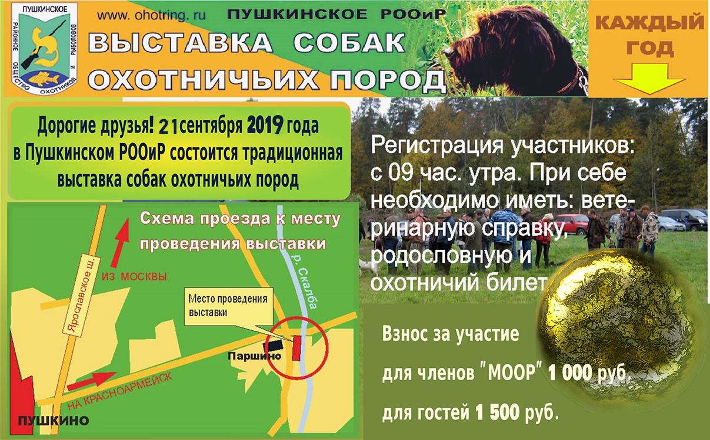

РАСПОРЯЖЕНИЕ №17 от 19 июля 2019г
«Об организации охоты на пернатую дичь в летне-осеннем сезоне 2019»
РАСПОРЯЖЕНИЕ
В соответствие с Федеральным Законом "Об охоте" № 209-ФЗ от 24 июля 2009 г ( в ред. от 29.07.2017г. Правилами охоты в ред. Приказа Минприроды России от 16.11.2010 № 512 (в ред. от 21.03.2018г), Постановления Губернатора Московской области от 31.10.2012г (в ред. от 22.12.2017)"О видах разрешенной охоты и параметрах осуществления охоты в охотничьих угодьях Московской области", Распоряжением от 12.04.2012 г. № 48 «Об утверждении норм допустимой добычи охотничьих ресурсов, в отношении которых не устанавливается лимит добычи,и норм пропускной способности охотничьих угодий на территории Московской области», приказом Минприроды России от 29 августа 2014 г. N 379 "Об утверждении порядка оформления и выдачи разрешений на добычу охотничьих ресурсов, порядка подачи заявок и заявлений, необходимых для выдачи таких разрешений, и утверждении форм бланков разрешений на добычу копытных животных, медведей, пушных животных, птиц":
1. Руководителям ОРХ МСОО «МООиР» организовать любительскую и спортивную охоту в охотничьих хозяйствах МСОО "МООиР" в летне-осеннем сезоне 2019 года, а так же выдачу разрешений на добычу охотничьих ресурсов и путевок на нижеперечисленные виды и группы пернатой дичи в следующие сроки:
1.1. На болотно-луговую (бекас, гаршнеп, коростель дупель (дупель – кроме гнездовой популяции) и др., см п. 32.2 Правил охоты), полевую (серая куропатка, перепел, вяхирь, горлицы, п.32.4 Правил охоты) и водоплавающую (гуси, казарки, утки, камышница, лысуха, п.35.3 Правил охоты) - с утренней зари 10 августа по 15 ноября 2019 г. включительно, п. 41.1
1.2. На боровую (вальдшнеп, рябчик, тетерев - ограниченно)
- с утренней зари 17 августа по 31 декабря 2019 г. (пп.35.1; 41.1).
1.3. Для оформления разрешения на добычу охотничьих ресурсов необходимо предоставить
следующие документы:
- охотничий билет единого федерального образца
- действующий членский охотничий билет (при наличии)
действующее разрешение на право ношения охотничьего огнестрельного оружия, которое предполагается использовать при данном виде охоты.
- разрешение на содержание и разведение ловчих птиц в полувольных условиях(при осуществлении охоты с ловчими птицами).
1.4. В связи с неблагополучием ряда районов области по бешенству оформлять документы на охоту с применением собак только при наличии действующей отметки в ветеринарном свидетельстве о вакцинации данной собаки от бешенства.
1.5. При оформлении документов на охоту с охотничьей собакой и (или) ловчей птицей
вписывать их в путевку.
Охота на виды занесенные в Красную книгу Московской области, запрещается.
2. Не допускать превышение норм допустимой добычи пернатой дичи на одного охотника в день (п. II Приложения к распоряжению Минсельхоза М.о. от 12.04.2012 № 48):
2.1. Болотно-луговая дичь: 10 особей разных видов в сутки на одного охотника.
2.2. Водоплавающая – 5 особей разных видов в сутки на одного охотника.
2.3. Полевая дичь: Серая куропатка - 2, перепел – 10, вяхирь - 5, горлицы - 5 особей в сутки на одного охотника.
2.4.Боровая дичь: Рябчик – 2, вальдшнеп - 5 особей в сутки на одного охотника.
Тетерев - 1 особь за сезон охоты на одно охотничье угодье (охотничье хозяйство).
3. При организации проведения охоты руководствоваться действующим законодательством, настоящим распоряжением, а также прейскурантом на услуги, утвержденным Советом МСОО "МООиР" (протокол № 10 от 03 июля 2019 г. Введен в действие 03.07.2019 г).
Прейскурант размещен на сайте МСОО «МООиР»
4. В связи с неблагополучной санитарно-эпидемиологической обстановкой в регионе, штатным сотрудникам проводить разъяснительную работу среди охотников о наличии угрозы проявления АЧС, мерах профилактики и соблюдении правил санитарной безопасности при нахождении в охотугодьях. В случае обнаружения в охотничьих угодьях погибшего животного, случаев массовой гибели, либо - явных признаках заболевания животных ОХОТНИК ИЛИ ШТАТНЫЙ СОТРУДНИК охотпользователя обязан в возможно короткий срок уведомить о данном факте должностное лицо специально уполномоченного государственного органа Московской области (Управление охоты и охотничьих ресурсов) и (или) СББЖ данного района. Руководителям хозяйств разместить контактные телефоны районных СББЖ, территориальных отделов охотнадзора, в местах оформления документов на охоту.
5. Руководителям охотничьих хозяйств, взять под личный контроль готовность охотничьих баз, инвентаря и оборудования к приему охотников. Обратить особое внимание на качество обслуживания и соблюдение штатным составом своих должностных обязанностей. Неукоснительно соблюдать и инструктировать охотников по правилам пожарной безопасности и техники безопасности при обращении с оружием при проведении охоты.
6. Строго соблюдать нормы пропускной способности охотничьих угодий (Распоряжение МСХ и П МО от 12 апреля 2012 г. № 48). В связи с необходимостью соблюдения норм пропускной способности в первую очередь оформлять документы на охоту членам МСОО "МООиР", затем членам общественных организаций, входящих в Ассоциацию "Росохотрыболовсоюз", а при наличии свободных мест – лицам, которые не являются членами выше перечисленных общественных объединений.
7. Руководителям структурных подразделений МСОО "МООиР" контролировать правильность оформления разрешений и путевок на охоту подотчетными лицами; принять меры для максимального возврата разрешений. При оформлении разрешений и путевок на охоту применять контрольно-кассовую технику (кассовый чек) в соответствии с ст. 1. 2 ФЗ РФ № 54 от 22.05.2003г. (с изменениями и дополнениями). Требовать от охотников обязательного заполнения таблиц данными по количеству и видовому составу добытых охотничьих ресурсов, а в случае, если охота оказалась нерезультативной, делать соответствующую отметку. Разъяснять охотникам необходимость сдачи заполненных разрешений в установленные сроки для практики ведения охотничьего хозяйства.
8. Руководителям структурных подразделений, руководителям городских обществ охотников и рыболовов до 31 января 2020 г. сдать в отдел охоты и рыболовства Правления МСОО «МООиР» отчет о количестве и видовом составе изъятой дичи и сведения о количестве выданных и возвращенных разрешений и путевок.
Внимание!!!Акция!!!
Акция для членов ПРООиР. C 25.07.2019 по 25.08.2019 сезонная путевка будет стоить 3000руб, а для членов достигших 70летнего возраста - 2000руб.
Выдача путёвок!!!
9 августа 2019 года в Правлении ПРООиР будет проводиться выдача путевок до 16:00, так же можно будет приобрести путевки на кордоне в Балабаново до 22:00.
Выставка охотничьих пород собак 2019 года
Очередная Пушкинская выставка собак охотничьих пород планируется на 21 сентября 2019г. Взнос для членов Росохотрыболовсоюза 1000руб, а для остальных 1500руб.
Регистрация собак с 900 до 1000.

| Порода | Эксперт | Категория эксперта |
| Спаниэли, лабрадоры. | Громыко Валерий Николаевич | Первая |
| Островные легавые | Перепелкина Ольга Викторовна | Первая |
| Шотландский сеттер | Карнилов Павел Николаевич | Третья |
| Курцхары | Суки: Буразовская Ольга Александровна Кобели: Смоляга Владимир Иванович |
Первая Вторая |
| Дратхаары | Исаев Николай Иванович | Первая |
| Норные | Меренкова Галина Михайловна | Третья |
| Лайки | Шиндаров Анатолий Анатольевич | Вторая |
| Гончие | Гаранин Сергей Валентинович | Вторая |
| Эпаньоль Бритон | Антонова Алла Павловна | Первая |
РАСПОРЯЖЕНИЕ №13 от 31 июля 2018г.
«Об организации охоты на пернатую дичь в летне-осеннем сезоне 2018»
РАСПОРЯЖЕНИЕ
В соответствие с Федеральным Законом "Об охоте" № 209-ФЗ от 24 июля 2009 г ( в ред. от 29.07.2017г). , Правилами охоты в ред. Приказа Минприроды России от 16.11.2010 № 512 (в ред. от 21.03.2018г),Постановления Губернатора Московской области от 31.10.2012г (в ред. от 22.12.2017)"О видах разрешенной охоты и параметрах осуществления охоты в охотничьих угодьях Московской области", Распоряжением от 12.04.2012 г. № 48 «Об утверждении норм допустимой добычи охотничьих ресурсов, в отношении которых не устанавливается лимит добычи,и норм пропускной способности охотничьих угодий на территории Московской области», приказом Минприроды Россииот 29 августа 2014 г. N 379 "Об утверждении порядка оформления и выдачи разрешений на добычу охотничьих ресурсов, порядка подачи заявок и заявлений, необходимых для выдачи таких разрешений, и утверждении форм бланков разрешений на добычу копытных животных, медведей, пушных животных, птиц":
1. Руководителям ОРХ МСОО «МООиР» организовать любительскую и спортивную охоту в охотничьих хозяйствах МСОО "МООиР" в летне-осеннем сезоне 2018 года, а так же выдачу разрешений на добычу охотничьих ресурсов и путевокна нижеперечисленные виды и группы пернатой дичи в следующие сроки:
1.1. На болотно-луговую (бекас, гаршнеп, коростель дупель (дупель – кроме гнездовой популяции) и др., см п. 32.2 Правил охоты), полевую (серая куропатка, перепел, вяхирь, горлицы, п.32.4 Правил охоты) и водоплавающую (гуси, казарки, утки, камышница, лысуха, п.35.3 Правил охоты)
- с утренней зари 11 августа по 15 ноября 2018 г. включительно, п. 41.1
1.2. На боровую (вальдшнеп, рябчик, тетерев - ограниченно)
- с утренней зари 18 августа по 31 декабря 2018 г. (пп.35.1; 41.1).
1.3. Для оформления разрешения на добычу охотничьих ресурсов необходимо предоставить
следующие документы:
- охотничий билет единого федерального образца
- действующий членский охотничий билет (при наличии)
действующее разрешение на право ношения охотничьего огнестрельного оружия, которое предполагается использовать при данном виде охоты.
- разрешение на содержание и разведение ловчих птиц в полувольных условиях(при осуществлении охоты с ловчими птицами).
1.4. В связи с неблагополучием ряда районов области по бешенствуоформлять документы на охоту с применением собак только при наличии действующей отметки в ветеринарном свидетельстве о вакцинации данной собаки от бешенства.
1.5. При оформлении документов на охоту с охотничьей собакой и (или) ловчей птицей
вписывать их в путевку.
Охота на виды занесенные в Красную книгу, запрещается.
2. Не допускать превышение норм допустимой добычи пернатой дичи на одного охотника в день (п. II Приложения к распоряжению Минсельхоза М.о. от 12.04.2012 № 48):
2.1. Болотно-луговая дичь: 10 особей разных видов в сутки на одного охотника.
2.2. Водоплавающая – 5 особей разных видов в сутки на одного охотника.
2.3. Полевая дичь: Серая куропатка - 2, перепел – 10, вяхирь - 5, горлицы - 5 особейв сутки на одного охотника.
2.4.Боровая дичь: Рябчик – 2, вальдшнеп - 5 особей в сутки на одного охотника.
Тетерев - 1 особь за сезон охоты на одно охотничье угодье (охотничье хозяйство).
Тетерев - 1 особь за сезон охоты на одно охотничье угодье (охотничье хозяйство).
3. При организации проведения охоты руководствоваться действующим законодательством, настоящим распоряжением, а также прейскурантом на услуги, утвержденным Советом МСОО "МООиР" (протокол № 7 от 31 июля 2018 г. Введен в действие 31.07.2018 г).
РАСПОРЯЖЕНИЕ №19 от 14 августа 2019г.
«Об организации охоты на пернатую дичь с подружейными собаками и ловчими птицами в летне-осеннем сезоне 2018»
РАСПОРЯЖЕНИЕ
В соответствие с Федеральным Законом "Об охоте" № 209-ФЗ от 24 июля 2009 г ( в ред. от 29.07.2017г) , Правилами охоты в ред. Приказа Минприроды России от 16.11.2010№ 512 (в ред. от 21.03.2018г), Постановления Губернатора Московской области от 31.10.2012г (в ред. от 22.12.2017)"О видах разрешенной охоты и параметрах осуществления охоты в охотничьих угодьях Московской области", Распоряжением от 12.04.2012 г. № 48 «Об утверждении норм допустимой добычи охотничьих ресурсов, в отношении которых не устанавливается лимит добычи,и норм пропускной способности охотничьих угодий на территории Московской области», приказом Минприроды России от 29 августа 2014 г. N 379 "Об утверждении порядка оформления и выдачи разрешений на добычу охотничьих ресурсов, порядка подачи заявок и заявлений, необходимых для выдачи таких разрешений, и утверждении форм бланков разрешений на добычу копытных животных, медведей, пушных животных, птиц":
1.Организовать охоту на пушных зверей в охотничьих хозяйствах МСОО «МООиР» в следующие сроки:
- на волка, лисицу, зайцев (беляка, русака) - с 15 сентября 2019 года по 29 февраля 2020 года;
- на норку (американскую), белку, енотовидную собаку, куниц (лесную, каменную), хоря (лесного, степного),с 17 августа 2019 года по 29 февраля 2020 года.
- на ондатру, водяную полевку – с 01 октября 2019 по 01 апреля 2020 гг.
- на бобра, ласку с 01 октября 2019 по 29 февраля 2020 гг.
Оформление и выдачу разрешений на добычу барсука, куницы и бобра производить после оплаты налогового сбора (60 руб/особь) с указанием в разрешении нормы добычи особей"за сезон охоты"
В квитанции об оплате налогового сбора делать отметку о выдаче разрешения (номер, дата).
2.На основание Распоряжения Министерства сельского хозяйства и продовольствия Московской области № 48 от 12.04.2012 года. установить нормы добычи охотничьих ресурсов (особей каждого вида) на одного охотника в сутки:
волк, енотовидная собака, лисица – без ограничений;
куница (лесная, каменная), норка (американская), хорь (лесной, степной) – 2;
ондатра – 5;
белка обыкновенная; бобр – 3;
заяц-беляк, заяц-русак, ласка - 1.
Установить нормы пропускной способности при организации и проведения охоты из расчета 100 га охотугодий на 1-го охотника.
В связи с неблагоприятной эпизоотической обстановкой по бешенству не ограничивать выдачу разрешений на лисицу и енотовидную собаку. Принять меры по увеличению их добычи. При оформлении разрешений на добычу охотничьих ресурсов, штатным сотрудникам охотничьих хозяйств инструктировать охотников,о необходимости соблюдения мер санитарной безопасности при работе с добытыми животными.
26 мая 2018 года состоится 125-я Московская областная выставка собак охотничьих пор
26 мая 2018 года состоится 125-я Московская областная выставка собак охотничьих пород. С 8.00 до 10.00 – запись на выставку. 10.00 – парад открытия выставки, по окончании работа в рингах. Стоимость записи на выставку в день проведения выставки для членов МСОО «МООиР» и Ассоциации «Росохотрыболовсоюз»: - 1000 руб/гол; - 500 за каждую последующую собаку, принадлежащую одному владельцу; Запись на выставку для не членов МСОО «МООиР» и Ассоциации «Росохотрыболовсоюз»: - 2000 руб/гол; - 1000 за каждую последующую собаку, принадлежащую одному владельцу. При себе иметь: охотничий билет (действующий членский билет Ассоциации «Росохотрыболовсоюз» при наличии иметь обязательно), «Свидетельство на охотничью собаку», или «Справку о происхождении охотничьей собаки», или родословные РКФ или FCI, ветеринарный паспорт, ветеринарная справка ф.1 или ф.4. Справки по тел.: (495) 930-44-49, (905) 788-61-30 отдел охотничьего собаководства МСОО «МООиР». Выставка будет проводиться на территории Олимпийского учебно-спортивного центра “Планерная” Московской Федерации профсоюзов. Проезд: Электропоездом с Ленинградского вокзала до станции “Планерная”, далее пешком до ОУСЦ “Планерная” или от м.Речной вокзал, далее на маршрутном такси 105 до ост. “Спортивная база”, или м.Планерная, маршрутное такси 154 до ост. “Спортивная база”. Адрес: Химки, ст. Планерная
Приглашаем вас поохотиться и отдохнуть на базе наших друзей в Селигере.
Вся информация по тел:8-916-751-41-41.


Пушкинское районное общество оказывает консультационное собеседование для членов общества по четвергам с13 00 до 15 00ч.
Просьба заранее записываться. 8-495-993-34-00 Возможно, получить квалифицированную юридическую помощь; 1. Гражданское право. А.Семейное право. Б.Наследственное право. 2. Уголовное право. 3. Административное право. 4. Земельное право. Также возможно оказание услуг по составлению соответствующих документов в компетентные органы, представление интересов в судебных инстанциях.
ШТРАФЫ ЗА НЕСДАЧУ СВЕДЕНИЙ О ДОБЫТОЙ ДИЧИ
Охотникам не стоит забывать сдавать сведения о
добыче охотничьих ресурсов и их количестве.
Это грозит административной ответственностью
и штрафами. А повторное нарушение правил
охоты грозит не только штрафом, но и лишением
права охоты и даже конфискацией орудия охоты.
В какие сроки сдавать сведения и каким
образом, читайте в статье.
Сведения о добытой дичи: Сдача, штрафы и ответственность
Во многих регионах России заканчивается сезон охоты на некоторые дичи. В связи с этим
охотников предупреждают о необходимости сдавать сведения о добытой дичи и зверях:
сведения о добыче птиц и пушных необходимо сдать по месту получения разрешений не
позднее 20 дней после окончания последнего срока охоты, указанного в разрешении;
сведения о добыче копытного животного или медведя отделяется от разрешения и
направляется по месту получения разрешения в течение 10 дней после добычи,
ранения животного или окончания последнего из сроков осуществления охоты,
указанного в разрешении;
сведения можно сдать лично или отправить заказным письмом по почте.
Охотники, не сдавшие сведения о добыче охотничьих ресурсов, будут привлекаться к
административной ответственности по части 1 статьи 8.37 Кодекса об административных
правонарушениях РФ.
Статья 8.37. Нарушение правил охоты, правил, регламентирующих рыболовство и
другие виды пользования объектами животного мира:
1. Нарушение правил охоты, за исключением случаев, предусмотренных частями 1.2, 1.3
настоящей статьи, -
влечет наложение административного штрафана граждан в размере от пятисот до четырех
тысяч рублей с конфискацией орудий охоты или без таковой или лишение права осуществлять
охоту на срок до двух лет; на должностных лиц - от двадцати тысяч до тридцати пяти тысяч
рублей с конфискацией орудий охоты или без таковой.
1.1.Повторное в течение года совершение административного правонарушения, предусмотренного
частью 1 настоящей статьи, -
влечет наложение административного штрафана граждан в размере от четырех тысяч до
пяти тысяч рублей с конфискацией орудий охоты или без таковой или лишение права
осуществлять охоту на срок от одного года до трех лет; на должностных лиц - от тридцати пяти
тысяч до пятидесяти тысяч рублей с конфискацией орудий охоты или без таковой.
1.2.Осуществление охоты с нарушением установленных правилами охоты сроков охоты, за
исключением случаев, если допускается осуществление охоты вне установленных сроков, либо
осуществление охоты недопустимыми для использования орудиями охоты или способами охоты -
влечет для граждан лишение права осуществлять охотуна срок от одного года до двух лет;
наложение административного штрафа на должностных лиц в размере от тридцати пяти тысяч до
пятидесяти тысяч рублей с конфискацией орудий охоты или без таковой.
1.3. Непредъявление по требованию должностных лиц органов, уполномоченных в области
охраны, контроля и регулирования использования объектов животного мира (в том числе
отнесенных к охотничьим ресурсам) и среды их обитания, органов, осуществляющих функции по
контролю в области организации и функционирования особо охраняемых природных территорий
федерального значения, государственных учреждений, находящихся в ведении органов
исполнительной власти субъектов Российской Федерации, осуществляющих государственный
охотничий надзор, функции по охране, контролю и регулированию использования объектов
животного мира и среды их обитания, других уполномоченных в соответствии с законодательством
Российской Федерации должностных лиц, производственных охотничьих инспекторов охотничьего
билета, разрешения на добычу охотничьих ресурсов, путевки либо разрешения на хранение и
ношение охотничьего оружия в случае осуществления охоты с охотничьим огнестрельным и (или)
пневматическим оружием -
влечет для граждан лишение права осуществлять охотуна срок от одного года до двух лет;
наложение административного штрафа на должностных лиц в размере от двадцати пяти тысяч до
сорока тысяч рублей с конфискацией орудий охоты или без таковой.
2. Нарушение правил, регламентирующих рыболовство, за исключением случаев,
предусмотренных частью 2 статьи 8.17 настоящего Кодекса, -
влечет наложение административного штрафа на граждан в размере от двух тысяч до пяти тысяч
рублей с конфискацией судна и других орудий добычи (вылова) водных биологических ресурсов
или без таковой; на должностных лиц - от двадцати тысяч до тридцати тысяч рублей с
конфискацией судна и других орудий добычи (вылова) водных биологических ресурсов или без
таковой; на юридических лиц - от ста тысяч до двухсот тысяч рублей с конфискацией судна и
других орудий добычи (вылова) водных биологических ресурсов или без таковой.
3. Нарушение правил пользования объектами животного мира, за исключением случаев,
предусмотренных частями 1 - 2 настоящей статьи, -
влечет наложение административного штрафа на граждан в размере от пятисот до одной тысячи
рублей с конфискацией орудий добывания животных или без таковой; на должностных лиц - от
двух тысяч пятисот до пяти тысяч рублей с конфискацией орудий добывания животных или без
таковой; на юридических лиц - от пятидесяти тысяч до ста тысяч рублей с конфискацией орудий
добывания животных или без таковой.
Источник: http://www.nexplorer.ru/news__13772.htm